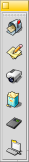

Svenska
Svenska Català
Català Deutsch
Deutsch English
English Español
Español Français
Français Italiano
Italiano Magyar
Magyar Polski
Polski Português
Português Português (Brazil)
Português (Brazil) Română
Română Slovenčina
Slovenčina Suomi
Suomi 中文 ［中文］
中文 ［中文］ Русский
Русский Українська
Українська 日本語
日本語Översättningen av denna sida är inte komplett. Delar av innehållet kommer därför att visas på engelska.
 StartBlock
StartBlock
| Deskbar: | ||
| Location: | /boot/system/apps/LaunchBox | |
| Settings: | ~/config/settings/LaunchBox/* |
One or more LaunchBox applets can be started to organize shortcuts to your favorite applications or documents. You decide if each is shown on all or just the current workspace. They can also serve to quickly open a document in a specific application. For example, you could drag & drop a HTML file onto a text editor in a LaunchBox to open it in the editor instead of its preferred application, the browser.
Alla inställningar kan nås genom att höger-klicka:
| Lägger till en tom knapp. | |||
| Tömmer en knapp. | |||
| Tar bort en knapp. | |||
| Hovering the mouse over an icon shows a tooltip with the file's name and, in case of an application, its short description if it differs from its name (see topic FileTypes). With this menu item you can customize the description for this tooltip. | |||
Aligns the buttons horizontally. Sets the icon size between 16 and 64 pixel. Launches the object only once, even when you (accidentally) double-click. Shows the window border. LaunchBox pops up if the mouse is near the screen edge. Shows the LaunchBox on every workspace. | |||
Add a new pad. Duplicate the current pad. Close the current pad. | |||
Quits all LaunchBox pads. |